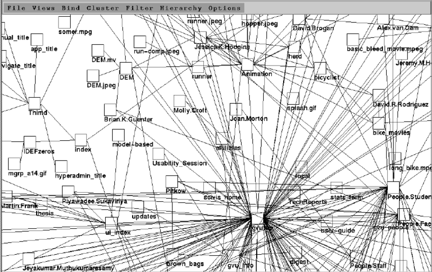

Hypermedia Powered Drupal
Shawn Duncan
Principal Software Engineer, Memorial Sloan Kettering Cancer Center © 2024. This work is openly licensed via CC BY-SA 4.0.This presentation reflects my own perspective and does not represent the views or opinions of Memorial Sloan Kettering Cancer Center (MSK)
Hypermedia
Why do we call it “the web?”

Source: Visualizing Complex Hypermedia Networks through Multiple Hierarchical Views [1995]
Hypermedia Controls: How we “branch”
HTML has two hypermedia controls.
Hypermedia Applications
- Use a declarative syntax within the HTML.
- Interact with the server using HTML.
- Stay within the original REST-ful architecture of the web.
- Continue to use Hypermedia As The Engine of Application State (HATEOAS).
Overview
2023 JavaScript Trends
Source: https://risingstars.js.org/2023/Five Aspects of htmx
- Behaviors are described within the element
- Any element can issue an HTTP request
- Any event can trigger an HTTP request
- Use all the “verbs” of HTTP
- Target any element in the document for replacement
Features
Behaviors are described within the element
Any element can issue an HTTP request
Any event can trigger an HTTP request
Use all the “verbs” of HTTP
- GET (retrieves):
data-hx-get="/path" - POST (creates):
data-hx-post="/path" - PUT & PATCH (alter):
data-hx-put="/path"data-hx-patch="/path"
- DELETE (deletes):
data-hx-delete="/path"
Target any element in the document for replacement
Comparison
A Typical JavaScript Approach
- Creates behaviors using an imperative syntax that is seperated from the HTML.
- Interact with the server using JSON data.
- State is modeled in Javascript memory.
Behaviors and state are seperated from HTML.
stateDiagram-v2
ShadowDOM: Shadow DOM
b: body
bs: body
d1: div
d2: div
d3: div
d4: div
p1: p
p2: p
i1: img
note left of i1 : To make this clickable
i2: img
note right of i2 : Add a click behavior here
[*] --> HTML
state HTML {
b --> d1
b --> d2
d1 --> i1
d2 --> p1
}
[*] --> ShadowDOM
state ShadowDOM {
bs --> d3
bs --> d4
d3 --> i2
d4 --> p2
}
HTMX is different
- HTMX is smaller in size and scope
HTMX is different
- HTMX is smaller in size and scope: framework or library?
- HTMX extends and processes HTML.
- HTMX has no other dependencies.
- HTMX doesn't need any kind of compiler or transpiler.
In a Drupal Project
HTMX is easy to use in your Drupal project
https://www.drupal.org/project/htmxcomposer require 'drupal/htmx:^1.2' and either
{# In a Twig template we attach the library. #}
{{ attach_library('htmx/drupal') }}// Include it in your Drupal render array.
$build['#attached']['library'][] = 'htmx/drupal';
Your HTMX toolbox contains a lot of attributes
\Drupal\htmx\Template\HtmxAttribute
class HtmxAttribute extends Attribute {}
What we add to the extended class are methods to build HTMX attributes.
And then you can add the result to the render array.
Since we extend Attribute you can pass your other attributes to the constructor
And all the attributes will be added to the render array:
HTMX attributes in Twig
Coming feature:
https://www.drupal.org/project/htmx/issues/3474162
More tools in the box
- Assets (CSS/JS) from the request are also inserted
- Detect
- Diff
- Insert
- Route option:
_htmx_route: true⇒Drupal\Core\Render\Plugin\DisplayVariant\SimplePageVariant /htmx/{entityType}/{entity}/{viewMode}- HTMX Block: A drupal block that loads another block dynamically via HTMX.
htmx/debuglibrary ⇒data-hx-ext="debug"
In Drupal Core
A proposal
- Alex Bronstein (effulgentsia)
- Gradually replace Drupal's AJAX system with HTMX
- Connected to the effort to refactor jQuery out of Drupal
A Proof of Concept Under Construction
- Théodore Biadala (nod_), front-end framework manager, requested a POC
- [POC] Implementing some components of the Ajax system using HTMX
- A Drupal creativity pattern: innovate in contrib and bring the learning to core
- Uses the same process from contrib to insert Assets (CSS/JS) from the request.
Freedom to change things
interface HtmlAttributeInterface extends \Countable, \IteratorAggregate, MarkupInterface {}
class HtmxAttribute Implements HtmlAttributeInterface {}
class Attribute implements HtmlAttributeInterface, \ArrayAccess {}Usage is only focused on HTMX attributes
\Drupal\Core\Render\Element\RenderElementBase